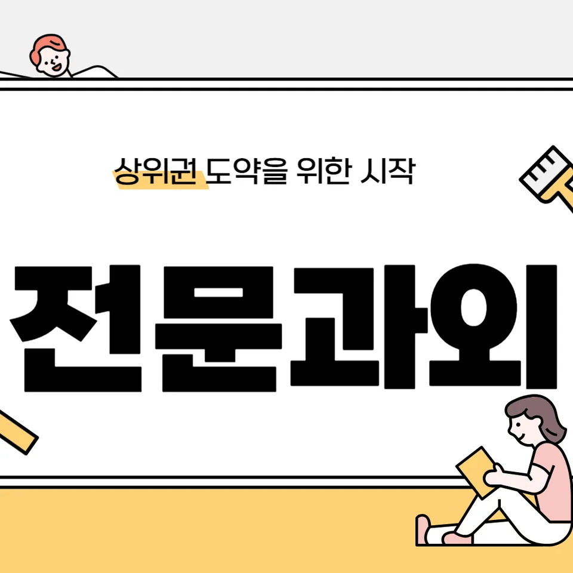

PageType : DONG
URL : /경기도과외/오산시과외/세교동과외/
지역 학습환경과 학생들의 변화
세교동과외를 시작한 학생들은 처음엔 “공부를 해도 왜 성적이 안 오르는지”를 잘 설명하지 못합니다. 그런데 세교동 학습 환경 속에서 통학 동선과 생활 리듬이 정리되면, 수업 시간에 집중이 붙는 순간이 보통 빨리 옵니다. 같은 문제를 풀어도 풀이 속도보다 오답 원인을 기록하는 태도가 달라지고, 그 변화가 다음 주 모의평가나 학교 수행평가의 결과로 이어집니다. 특히 학교 숙제 분량이 늘어나는 시기에는 학습 순서가 무너지기 쉬운데, 세교동과외에서는 “오늘 할 일의 최소 단위”부터 맞춰서 학생이 스스로 다시 출발하도록 돕습니다.
학생의 변화는 단순히 열심히가 아니라, 공부습관의 방향이 바뀌는 데서 시작됩니다. 예를 들어 국어는 지문 독해만 반복하던 학생이, 세교동과외를 통해 질문 리스트를 만들고 스스로 근거를 찾는 방식으로 바뀝니다. 수학은 개념 강의만 듣다 멈추는 패턴에서 벗어나, 시험에서 자주 나오는 유형을 “내 오답 패턴” 중심으로 재정렬하게 됩니다. 이런 흐름이 쌓이면 시험 직전에도 불안이 줄고, 학교 수업을 따라가는 체력이 생깁니다.
학부모가 많이 고민하는 부분
세교동과외를 문의하는 학부모들은 공통적으로 “무엇부터 손대야 할지”를 가장 걱정합니다. 아이가 공부를 한다고 말해도 실제로는 체크가 비거나, 문제집은 많이 풀지만 왜 틀리는지 설명을 못 하는 경우가 많습니다. 또한 학교에서 내주던 내신 준비 범위를 어떻게 쪼개야 하는지, 시험 일정에 맞춰 학습량을 배분하는 기준이 없어서 흔들리기도 합니다. 그래서 세교동과외에서는 학부모가 옆에서 잔소리하지 않아도 되는 구조를 만듭니다. 수업 후에는 학습 목표가 기록되고, 다음 단계가 명확하게 이어지도록 지도합니다.
또 다른 고민은 태도의 문제입니다. 시험이 다가오면 잠깐 의욕이 올라가다가, 실제 학습에서는 집중이 끊기는 일이 반복되곤 합니다. 이때는 시간을 늘리기보다 공부습관의 장치를 바꿔야 합니다. 세교동과외에서는 학습 태도, 오답 복기 방식, 과목별 마무리 루틴을 점검하며, 학부모가 보는 결과(내신 점수, 단원 성취)로 자연스럽게 연결되도록 설계합니다.
학년이 올라갈수록 달라지는 공부
학년이 올라갈수록 문제의 형태가 바뀌고, 그에 따라 필요한 학습 방식도 달라집니다. 중학교에서는 기본 개념과 학교 수업의 이해가 중심이지만, 학년이 더 올라가면 시험이 묻는 “선택과 집중”이 더 중요해집니다. 세교동과외를 통해 상위 학년으로 넘어간 학생들은 공통적으로 과목별 역할을 재정의하게 됩니다. 예컨대 어떤 과목은 점수를 올리기 위한 단서가 빠르게 보이고, 어떤 과목은 약점이 누적되어 시간이 걸리기도 합니다.
초반에는 공부 계획을 세워도 실행이 흔들리는 경우가 많습니다. 하지만 세교동과외에서는 학년 변화에 맞춰 시간관리 방식부터 조정합니다. 매일 똑같이 하려는 방식 대신, 시험 기간의 강도와 주간 목표를 다르게 운영해 학습 부담을 현실적으로 맞춥니다. 결국 자기주도학습은 “의지”가 아니라 “환경과 절차”로 자리 잡을 때 오래 갑니다.
학교생활과 내신 준비
내신은 단순히 문제를 많이 푸는 것으로만 오르지 않습니다. 학교생활에서 수업 태도, 필기 습관, 수행평가 준비, 수업 중 이해 확인이 함께 움직여야 결과가 따라옵니다. 세교동과외는 학교 수업을 기준점으로 삼습니다. 수업에서 놓친 개념이 생기면 다음 진도에 섞여서 약점으로 굳어버리기 때문에, 세교동과외에서는 “학교에서 끝난 다음에 확인해야 할 것”을 빠르게 체크합니다. 이 과정이 누적되면 내신 시험에서 문제를 만났을 때 읽히는 속도가 달라지고, 답안 작성의 정확성도 올라갑니다.
또한 내신 준비는 시험 범위를 받는 순간부터 시작되기보다, 단원 초입의 학습 습관이 좌우합니다. 학생이 매주 단원별로 무엇을 알고 무엇을 틀리는지 파악하면, 시험이 가까워졌을 때 재정리 부담이 줄어듭니다. 세교동과외는 내신 준비의 흐름을 시험 전·중·후로 나눠 학습이 끊기지 않게 만듭니다. 그 결과 시험 직후에도 “왜 틀렸는지”가 남고, 다음 시험에 반영되는 구조가 됩니다.
자기주도학습이 중요한 이유
자기주도학습은 혼자 공부하는 능력이라기보다, 스스로 방향을 고르는 능력에 가깝습니다. 세교동과외에서 학생들이 가장 먼저 배우는 것은 “다음 행동을 정하는 법”입니다. 예를 들어 문제집을 펼치더라도 무엇부터 풀지 모르거나, 오답을 모아도 다시 보지 않는 경우가 흔합니다. 세교동과외에서는 자기주도학습을 공부 시간의 양으로 평가하지 않고, 학습의 품질과 회복 속도로 봅니다. 틀린 문제를 단순 재풀이로 끝내지 않고, 비슷한 유형에서 사고가 어떻게 바뀌는지 확인합니다.
학생이 스스로 움직이게 되면 학교에서 수업을 듣는 태도도 달라집니다. 수업 중 “오늘은 어디를 이해해야 하는가”가 떠오르면 필기가 정리되고, 질문이 생깁니다. 그 질문은 결국 내신 문제에서 근거를 찾는 능력으로 연결됩니다. 학부모 역시 매번 통제하지 않아도 되기 때문에 불안이 줄어듭니다. 세교동과외는 그 지점을 목표로 학습 시스템을 제공합니다.
공부 습관이 성적에 미치는 영향
공부습관은 시험 점수의 바탕이 됩니다. 같은 실력의 학생이라도 복습 타이밍과 오답 처리 방식이 다르면 결과가 엇갈립니다. 세교동과외를 받은 학생들은 대체로 “수업 직후 10분 확인” 같은 작은 루틴을 먼저 만들고, 그 다음에 문제 풀이의 난이도를 조절합니다. 처음엔 시간이 짧아 보여도, 누적되면 단원별 약점이 덜 남습니다. 이런 차이가 시험에서 흔들릴 틈을 줄여줍니다.
또한 성적은 공부를 오래 하는지보다 ‘멈춘 뒤 다시 시작하는 힘’에서 결정됩니다. 공부를 오래 해도 집중이 끊기면 학습이 쌓이지 않기 때문입니다. 세교동과외에서는 시간관리와 학습 태도를 함께 점검합니다. 학생이 공부를 시작할 때의 준비(물, 필기 도구, 목표 문장)부터 마무리(오답 정리, 내일 과제 범위)까지 흐름을 잡으면, 다음 날 자기주도학습도 자연스럽게 이어집니다.
체크해야 할 학습 포인트
아래 항목을 점검하면 세교동과외를 통해 얻는 변화가 더 빠르게 확인됩니다. 학생과 학부모가 같은 기준을 공유할 수 있도록, 수업 이후 기록 항목도 이와 연결합니다.
- 오늘 학습 목표가 과목별로 한 줄로 정리되어 있는지
- 오답이 “틀린 이유” 중심으로 분류되어 재학습에 반영되는지
- 내신 범위가 시작된 날부터 복습 주기가 잡혀 있는지
- 시험 전 일괄 몰입보다 주간 단위로 계획이 움직이는지
지역 특성과 시험기간 운영
세교동은 학원·도서 환경이 다양해서 선택이 넓은 편이지만, 그만큼 시간표가 복잡해질 수 있습니다. 학생이 여러 활동 사이에서 학습 리듬을 잃으면 시험기간에 집중이 한 번에 무너집니다. 세교동과외는 학습을 ‘전부 다’가 아니라 ‘필수부터’로 재구성합니다. 특히 시험기간에는 과목별 역할이 바뀌는 시기이므로, 점수가 오를 영역과 보완이 필요한 영역을 분리해 학습량을 조정합니다. 이 과정이 있으면 시험이 다가와도 불안이 급격히 커지지 않습니다.
실제 사례로, 수행평가 비중이 늘어난 시기에는 국어와 사회의 기록형 학습이 무너지는 경우가 많습니다. 세교동과외에서는 학교생활에서 필요한 자료 정리와 예시 답안 분석을 연결해 내신 시험에서 답안 구성의 틀이 유지되게 합니다. 영어는 단어·문장 구조를 시험 유형과 맞춰 재배치하고, 수학은 계산 실수와 개념 적용 실수를 오답 항목으로 고정해 반복을 줄입니다. 이런 운영 방식이 시험 이후에도 다음 준비로 이어지면서 학습이 끊기지 않습니다.
자주 묻는 질문
세교동과외는 내신 준비에 어떤 방식으로 도움 되나요?
학교 수업 흐름을 기준으로 단원별 이해 확인과 오답 분류를 연결해, 시험 범위가 들어오기 전부터 내신 준비가 누적되게 만듭니다.
공부습관이 약한 학생도 따라갈 수 있을까요?
가능합니다. 세교동과외는 하루 분량을 줄이되 루틴을 먼저 세워서, 자기주도학습이 작동하는 형태로 바꿉니다.
시험기간에는 어떻게 학습 계획을 조정하나요?
주간 목표-과목 우선순위-오답 복기 순서로 재배열합니다. 몰입형보다 회복형 계획이 되도록 운영합니다.
학부모가 매번 관리해야 하나요?
필요성을 줄이는 방향입니다. 기록과 다음 행동이 수업 후에 정리되어, 학부모는 확인과 피드백 중심으로 역할을 가져갑니다.
과목 선택이나 전환이 필요한 경우도 있나요?
네. 학생의 약점이 누적된 과목은 보완 루트를 만들고, 점수 상승이 빠른 과목은 시험 유형 중심으로 재정렬해 균형을 맞춥니다.
